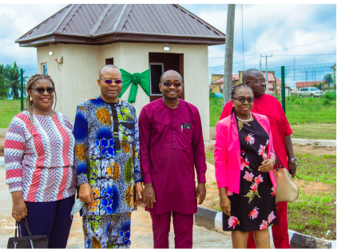

Our Success Story
Our Courses offers a good compromise between the continuous for assessment favoured by some universities and the eplacesd on final exams by others
1,532
GPA4 graduates
500
Research
100
The FUTO Centre of Excellence in Sustainable Procurement, Environmental & Social Standards is a project established in 2019 by the National Universities Commission (NUC) in partnership with the World Bank to provide innovative training programmes not available in higher institutions in Nigeria as at 2019. The umbrella programme is called SPESSE Project. SPESSE- means Sustainable Procurement, Environmental and Social Standards Enhancement.
It is designed to integrate Procurement, Environmental and Social Standards’ professionalization within the Nigerian public and private sectors to enhance sustainable development and value for money in public expenditure. A good procurement system puts into consideration the environmental and social requirements of the community. Hence the project is packaged to train Nigerians and Africans on procurement laws and processes, environmental standards, and social standards.
The implementing agencies for the project are the National Universities Commission (NUC), the Bureau for Public Procurement (BPP), the Federal Ministry of Environment (FMEnv), the Federal Ministry of Women Affairs (FMWA) and Centres of Excellence in six Nigerian universities - FUTO, FUAM, ABU, ATBU, UNIBEN, and UNILAG. The agencies and universities in the programme get performance-based payments for capacity building and infrastructural development (DLI - Disbursement Linked Indicators/Results).
The Centre is designed to run executive and degree courses in
the following three programme areas that will eventually evolve
to become departments.
• Procurement Management
• Environmental Standards
• Social Standards


To be a world class Centre for training and development of highly skilled human capital in the areas of Procurement, Environmental and Social Standards
FUTO Centre of Excellence in Sustainable Procurement, Environmental & Social Standards (FUTO CE-sPESS) is a project established in 2019 by the National Universities Commission (NUC) in partnership with the World Bank to provide new and innovative training programmes currently not available in higher institutions in Nigeria. The primary objective of FUTO CE-sPESS is to provide innovative and sustainable capacity building and professionalization in sustainable procurement, environmental standards, and social standards to meet the needs of the public and private sectors in the country and the Africa region.
Our Courses offers a good compromise between the continuous for assessment favoured by some universities and the eplacesd on final exams by others
1,532
500
100